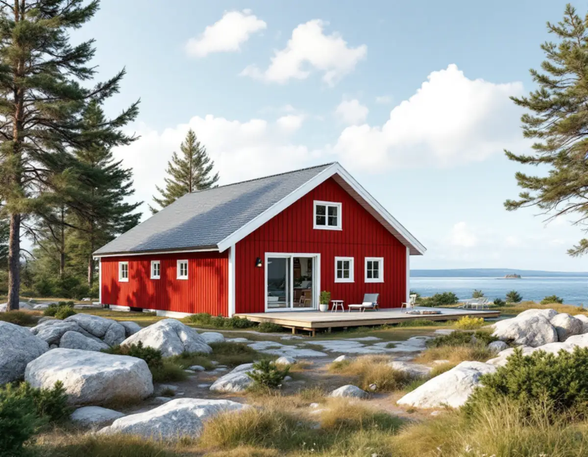
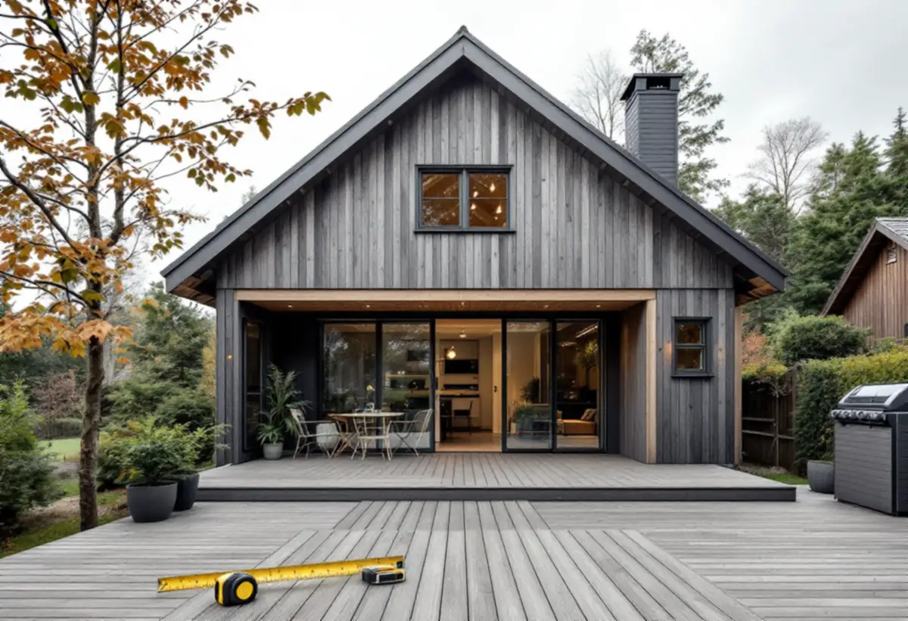
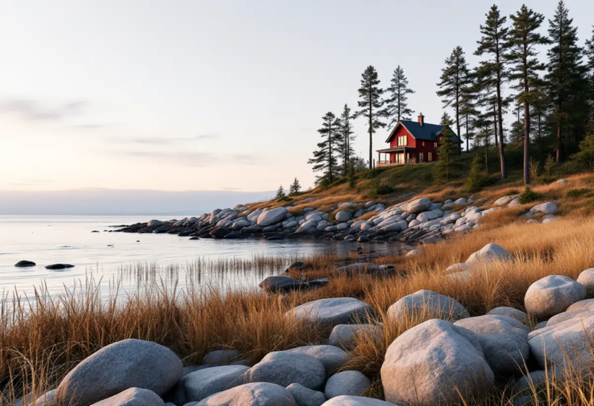

Platsbesök
Tidigare tillbyggnader, skärmtak och takkupor mäts upp.
Många hus i Norrtälje har redan byggts till i omgångar – en attefallstillbyggnad, ett skärmtak, en takkupa. Sedan december 2025 räknas allt det in när du vill bygga mer utan lov, och nära vattnet gäller dessutom strandskyddet. Geal Entreprenad AB bygger till villor och fritidshus i hela kommunen och börjar med det som redan finns.

En tillbyggnad kräver inte bygglov om den har en brutto- eller öppenarea på högst 30 kvadratmeter, inte går över husets taknock och tillsammans med andra genomförda tillbyggnader håller sig inom 30 kvadratmeter. Norrtälje kommun påpekar att även sådant som var lovbefriat enligt äldre regler, före 2025-12-01, ska tas med när arean räknas ihop.
Kommunen ger exempel: en anmäld tillbyggnad på 15 kvadratmeter enligt attefallsreglerna, ett bygglovsbefriat skärmtak på 15 kvadratmeter som skyddad uteplats och en takkupa enligt attefallsreglerna. Har huset både attefallstillbyggnaden och skärmtaket är de 30 kvadratmetrarna redan använda. Vid platsbesöket mäter vi upp allt som har byggts till och går igenom husets äldre handlingar.

En lovfri tillbyggnad på ett enbostadshus eller fritidshus får strida mot detaljplanen, skriver kommunen. Gäller tillbyggnaden en annan typ av byggnad måste den följa planen. Bygglov krävs om fastigheten ligger inom ett särskilt värdefullt område, och om tillbyggnaden placeras närmare än 4,5 meter från gränsen utan att grannen skriftligen har medgett det. Mot allmän plats inom detaljplan är det huvudmannen för platsen som kan lämna medgivandet.
När en tillbyggnad kräver bygglov prövas den olika beroende på var fastigheten ligger. Inom detaljplan prövas om åtgärden stämmer med planen. Utanför detaljplan kan riksintressen för kulturmiljövård, naturvård, friluftsliv, åkermark eller buller påverka prövningen, och kommunen behöver utreda att vatten och avlopp går att lösa. I kommunens karta finns lager för detaljplan, totalförsvar, särskilt värdefulla områden och strandskydd.
Strandskyddet förbjuder bland annat att uppföra byggnader eller tillbyggnader, ändra användningen av byggnader, fälla träd och schakta eller fylla ut inom det skyddade området. Det gäller generellt 100 meter från strandlinjen, och i vissa områden i Stockholms län är det utökat till 300 meter. Norrtälje kommun påpekar att även bygglovsfria åtgärder kan kräva strandskyddsdispens.
Ligger fastigheten inom ett område med landskapsbildsskydd, vanligast kring kyrkor, till exempel på Arholma, prövar Länsstyrelsen dispensen och du ansöker direkt där. Till en dispensansökan vill kommunen ha fotografier på platsen och från platsen mot huvudbyggnaden. Vi tar fram ritningarna och bilderna samtidigt, så att båda ansökningarna kan skickas tillsammans.
Kommunen ger allmän rådgivning om bygglov och regler, men skriver att den inte kan bedöma enskilda åtgärder via e-post eller telefon. Vill du ha ett bindande besked om att just din tillbyggnad inte kräver lov behöver du söka frivilligt bygglov, så att byggnadsnämnden gör en formell prövning.
Anmälan kan krävas även när lov inte behövs, till exempel för installation eller ändring av eldstad, rökkanal, ventilation eller hiss och vid ändring i byggnadens brandskydd. Om nya fristående hus på tomten kan du läsa under attefallshus i Norrtälje, och om nya hus och större projekt under byggföretag i Norrtälje.

Tidigare tillbyggnader, skärmtak och takkupor mäts upp.
Detaljplan, särskilt värdefulla områden, totalförsvar och strandskydd.
Tillbyggnaden ritas efter huset och tomten.
Frivilligt lov, bygglov och strandskyddsdispens vid behov.
Grund, stomme, tak och anslutningen mot huset.
Tillbyggnaden används när slutbeskedet har kommit.
Rotavdraget är högst 30 procent av arbetskostnaden, högst 50 000 kronor per person och år och högst 75 000 kronor tillsammans med rutavdrag. Material och resor ger inget avdrag.
Skatteverket godkänner en tillbyggnad av ett småhus om någon av tillbyggnadens sidor sitter ihop med husets yttervägg till minst 75 procent, eller om det finns en dörr emellan. Bostaden ska vara äldre än fem år och större delen av den ursprungliga stommen ska behållas. Bygglovshandlingar och arkitekt ger inget avdrag. Geal drar avdraget direkt på fakturan där det gäller.
Tillbyggnadens storlek, grund på berg eller lera, transporter till en ö eller en tomt utan väg, anslutningen mot taket och om lov eller dispens behövs. Efter ett gratis platsbesök får du ett skriftligt kostnadsförslag.
Mer boyta i samma hus.
Tillbyggnad →Takbyte, takbesiktning och plåtarbeten.
Takläggare i Norrtälje →Roslagen, skärgård och fritidshus.
Takrenovering i Norrtälje →Stugtomter, strandskydd och avlopp.
Attefallshus i Norrtälje →Fritidshus, WC-tillstånd och brunn.
Badrumsrenovering i Norrtälje →Nytt hus, förhandsbesked och egen brunn.
Byggföretag i Norrtälje →Ljust bostadshus och röda uthus.
Fasadmålning i Norrtälje →Bruksvillor, sommarvillor och Roslagens trähus.
Fasadrenovering i Norrtälje →Roslagens hus, bruksorter och bidrag i Norrtälje.
Fönsterbyte i Norrtälje →Gårdar, timmerhus och lösa innerbågar i Roslagen.
Fönsterrenovering i Norrtälje →Plankgolv i gamla gårdar och parstugor.
Golvläggare i Norrtälje →Från slipat eller lackat golv till skurgolv.
Golvslipning i Norrtälje →Gasolspis, vedspis och pentry i gäststugan.
Köksrenovering i Norrtälje →Takskydd, rännor och skorstensplåt i Norrtälje.
Plåtslagare i Norrtälje →Kust, snö och Roslagens tak.
Takbyte i Norrtälje →Ny tapet i fritidshus och villor.
Tapetsering i Norrtälje →Trähus, fritidshus och kustlägen i Norrtälje.
Målare i Norrtälje →Fritidshus, altan och gäststuga.
Snickare i Norrtälje →Egen brunn och eget avlopp.
Totalrenovering i Norrtälje →